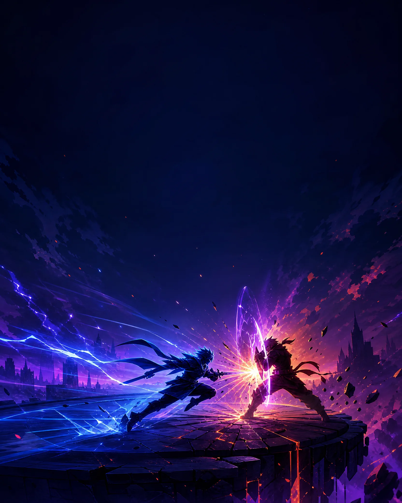
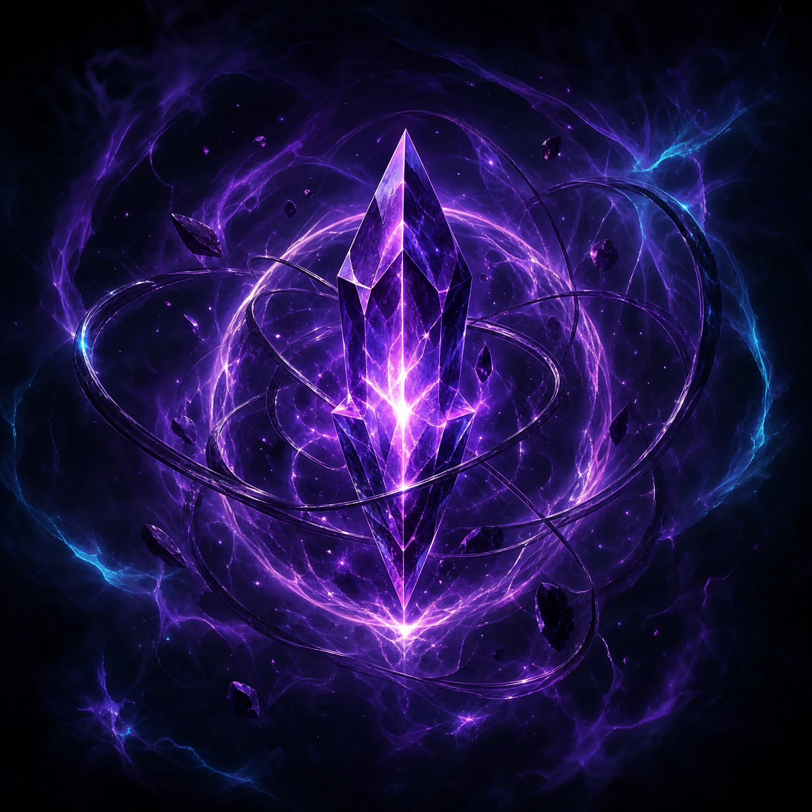
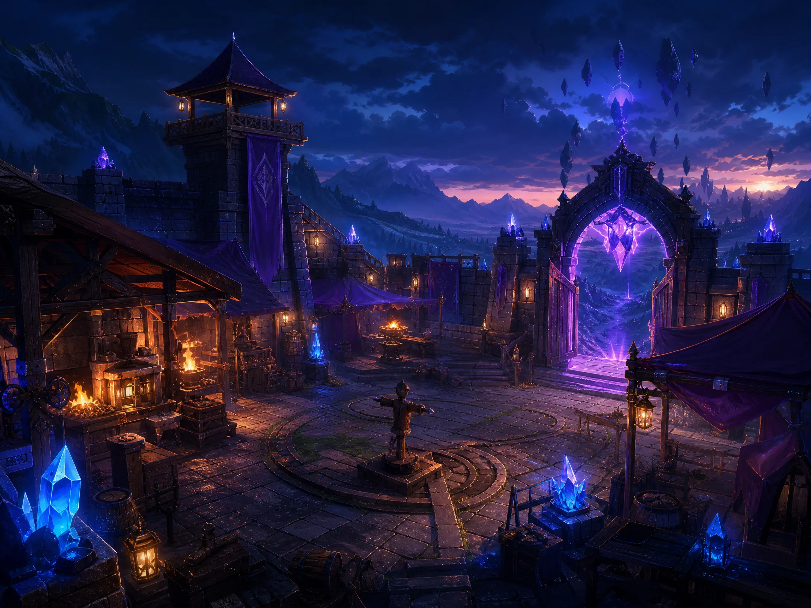

Leia primeiro
Distância, recurso, guarda e intenção. A melhor jogada começa antes do golpe.
Um universo de combate em que a sua build não é só uma coleção de habilidades. É uma assinatura.
Ganhe porque leu o adversário — não porque comprou poder.
Anime Verse Battlegrounds é um RPG de ação de mundo aberto para quem quer sentir evolução em cada escolha. Você começa com ataque, guarda e dash. O resto é conquistado jogando — e montado do seu jeito.
“Eu conquistei cada técnica que uso.”— a promessa central do projeto
Movimento cria ângulo. Guarda compra tempo. Aparo vira leitura. O servidor confirma — a tela faz você sentir.

Distância, recurso, guarda e intenção. A melhor jogada começa antes do golpe.
Antecipação, hit-stop, câmera e áudio trabalham juntos para deixar o impacto claro.
Confirmou? Converta. Errou? Recupere. Toda ação abre espaço para uma resposta.
Escolha um núcleo, monte um loadout e aceite as consequências. Builds puras ganham consistência. Híbridas ganham respostas — pagando em dissonância.
Ver como a progressão se abre
Ritmo constante para quem transforma preparação em pressão.
↗Precisão e leitura para quem espera a janela certa.
↗Defesa e resposta para quem transforma impacto em recurso.
↗Movimento e transformação com custo visível e decisivo.
↗Zonas seguras são preparação e convivência. Zonas livres oferecem mais valor — mas toda travessia avisa antes de pedir uma decisão.

WORLD / 001O primeiro ponto de retorno. Treino, forja básica, quadro de missão e uma porta para o desconhecido.
Ver atlas visualO projeto cresce por gates: primeiro a sensação, depois a escala. Abaixo está a direção atual — não uma promessa de datas.
Uma identidade, uma família, uma zona compacta, combate básico, progressão e save ponta a ponta.
Duas novas identidades, famílias adicionais e a primeira camada de Ressonância.
Maestria ramificada, regiões com densidade, bosses, missões, reputação e economia.
Competição e social entram depois que combate, economia e reconexão estiverem comprovados.
Um trailer animado com ação em movimento, VFX violeta, expansão de domínio e o pulso de Anime Verse Battlegrounds.
O projeto ainda está em desenvolvimento. Quando os canais oficiais estiverem prontos, este será o ponto de encontro para jogar, testar e acompanhar cada nova versão.